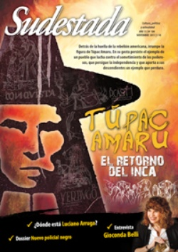

Buscar
El retorno del Inca
Detrás de la historia oficial, esa que "ama el singular protagónico y desprecia los plurales inherentes a los procesos", se oculta la huella profunda de una rebelión. Allí irrumpe de las entrañas americanas la figura del que conocemos por Túpac Amaru II, como relieve de un proyecto de liberación truncado por los mismos de siempre. Pero también allí comienza a gestarse un pasado de pueblos que luchan contra el sometimiento de los poderosos, que persiguen la independencia como único botín y que aportan a sus descendientes un ejemplo que mantiene vigencia hasta nuestros días.
Edición N° 104
Noviembre 2011
Revista bimensual
Comprar edición impresaSumario
- El retorno del Inca
- Ante el asesinato de Cristian Ferreyra
- La fe de los conversos
- "La literatura mueve energías y genera procesos en la conciencia"
- Matar al detective
- ¿Dónde está Luciano Arruga?
- Enfermeras: "Arte de curar, arte de cuidar"
- Canciones de fuego lento
- Un gol que hizo historia
- Juez y reo
- Montevideo, ida y vuelta sin prejuicios
Compartir Articulo
¿Polvos azules?
Matar es una forma de hacer historia. ¿Qué duda cabe? La historia está poblada de muertos, saturada de sangre. No es algo etéreo. Sólo lo sólido se desvanece en el aire, la sangre no se disuelve, se derrama; pero nunca deja de nutrir y estar y ser. La historia es sangre, se escribe con ella; y la sangre es eterna como el mundo. Las matanzas son una forma de narración que entran en escena cuando los cuentos pierden funcionalidad. Todos matan. Hasta los historiadores matan, pero de otro modo. Matan al tergiversar los hechos desde la segura quietud de sus gabinetes de trabajo, cuando deciden privilegiar intereses económicos por sobre datos concretos y minimizar otros, o directamente ocultarlos. Matar es una forma de hacer historia: no lo enseñan los manuales escolares, pero es cierto. La historia es culpable y los historiadores son sus principales cómplices al anestesiarnos con cuentos.
Con el caso de Túpac Amaru II, ocurre algo por el estilo: se lo presenta indefectiblemente de forma que parezca un cuento -bastante sencillo en realidad- protagonizado por una suerte de Robin Hood andino, único iluminado que conduce a las masas desarrapadas de indios y que termina capturado por el malvado alguacil de un Nottingham-castizo. Un estilo de narración que hace hincapié casi con exclusividad en el final sangriento del rebelde, regodeándose en las aristas morbosas de su ejecución. De esa forma, al detenerse en el despedazamiento de Condorcanqui, despojan a esa increíble gesta social de su dimensión estructural y de la religiosidad andina que la sustenta. Describen la rebelión como si se tratara de una moraleja, bastante ilustrativa por cierto, del destino que les aguarda a los rebeldes aunque breguen por una buena causa. Mejor quedarse manso y tranquilo. No es un dato menor. Semejante relato sobre Túpac Amaru II disuelve ese momento de aceleración histórica y lo deshuesa de su masa crítica hasta convertirlo en una sanguinolenta película hollywoodense donde el muchacho muere al final. En esta nota eso no sucede, porque el protagonista no es un individuo sino una sociedad que temporaliza aquel reclamo hasta el día de hoy.
Quizás el dato más relevante para adentrarse en la mayor insurrección del período colonial es acotarla en tiempo, geografía y sangre. Desde que Condorcanqui pronuncia el "Grito de Tinta", el 4 de noviembre de 1780, hasta que es detenido el 6 de abril de 1781 transcurren apenas cinco meses. Y si extendemos la fecha hasta el momento en que es ejecutado, el 18 de mayo del año siguiente, totaliza seis meses y 14 días. En ese breve lapso la masiva rebelión que desconoce la autoridad de los funcionarios realistas se extiende, inclusive después de su muerte, desde Colombia hasta el Impenetrable chaqueño conmoviendo los virreynatos del Perú, Nueva Granada y Río de la Plata, produciendo cien mil muertos y una cantidad aun mayor de desplazados de la zona de conflicto que tiene como epicentros Cuzco y La Paz. Si la cotejamos con nuestra guerra por la independencia -que comienza en el incruento Cabildo de 1810 y finaliza en la batalla de Ayacucho de 1824-, las bajas de ambos bandos ni se aproximan a esa cifra. Tal vez estas comparaciones nos permitan asomarnos a la magnitud de esa rebeldía masiva encolumnada tras el retorno del Inca, un anhelo que excede por completo a las intenciones de Condorcanqui.
La historia oficial, en cambio, finge prescindir de la sangre: por eso opta por narrar una revolución de escarapelas a imagen y semejanza del cielo, una casita de Tucumán donde lo único que cuenta es su pintoresca fachada y una fila de pobres burritos cruzando los Andes entre ventiscas y nieve. En esa historia, Túpac Amaru es apenas un detalle que a lo sumo sirve para demostrar la maldad de los realistas con una moraleja adicional: nada de lo que emprendan los indios termina bien.
(La nota completa en la edición gráfica de Sudestada Nº 104 - noviembre 2011)
Comentarios
Marcelo Valko
Articulos más vistos


LIBRERÍA SUDESTADA

Colección infantil

Distribuidora de Libros

Suscripción

Sudestada en URUGUAY

Otros articulos de esta edición
 Editorial
Editorial
La fe de los conversos
 Dossier
Dossier
Enfermeras: "Arte de curar, arte de cuidar"
Ofelia y Marta trabajan en el Hospital Argerich. Cada día llegan desde sus casas para pasar doce horas en la ...
Matar al detective
Nos preguntamos si la novela negra sigue vigente y en busca de respuestas, hicimos un recorrido por algunas de las ...
 En la calle
En la calle
¿Dónde está Luciano Arruga?
El rostro ausente de Luciano Arruga interroga a la sociedad entera. Una causa colmada de irregularidades y una madre que ...
 Cinestada
Cinestada
Un gol que hizo historia
Un documental recupera del olvido un episodio histórico: el único gol que convirtió la selección de El Salvador en los ...
 Malditos: Juan Filloy
Malditos: Juan Filloy
Juez y reo
Casi toda su vida osciló entre el moderado escándalo y el secreto para iniciados. Narrador, ensayista, poeta, dramaturgo, era el ...